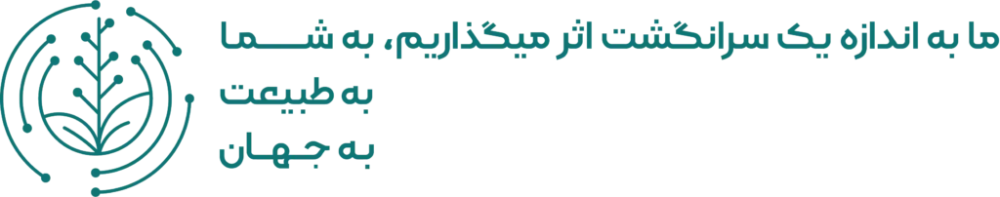

توسعه پایدار: چرخ رنگی اهداف توسعه پایدار سازمان ملل فقط بهصورت بدون تغییر و برای اطلاعرسانی استفاده شود، همراه با جمله «آبادیس از اهداف توسعه پایدار حمایت میکند». ادغام آن با لوگوی آبادیس مجاز نیست.
SDG colour wheel: use unaltered, informational only, with “Abadis Med supports the Sustainable Development Goals”; must not be merged into our logo or imply UN endorsement; link the UN SDG guidelines on any web page that shows it. · Impact sign: original Abadis artwork, unmodified (impact-sign.png / impact-sign-full.webp).